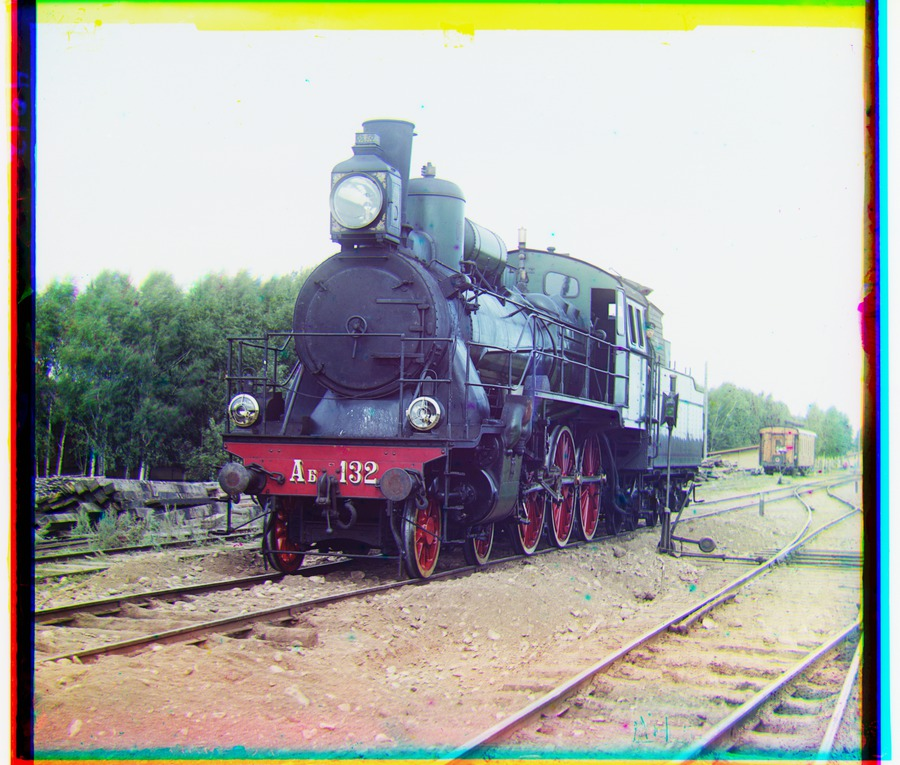

04 / Prokudin-Gorskii collection
Three exposures.
One world in color.
From a simple displacement search to a coarse-to-fine pyramid: reconstruct 18 supplied plates and two additional examples, with intermediate results, measurements and limitations.
Explore the reconstruction